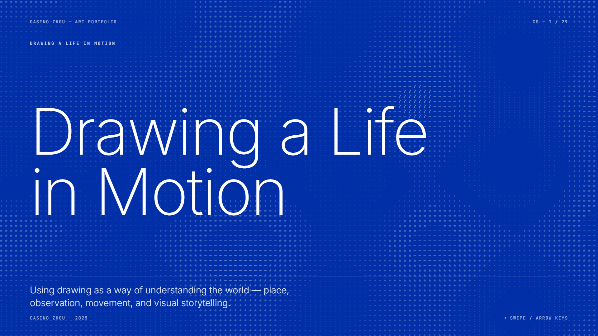
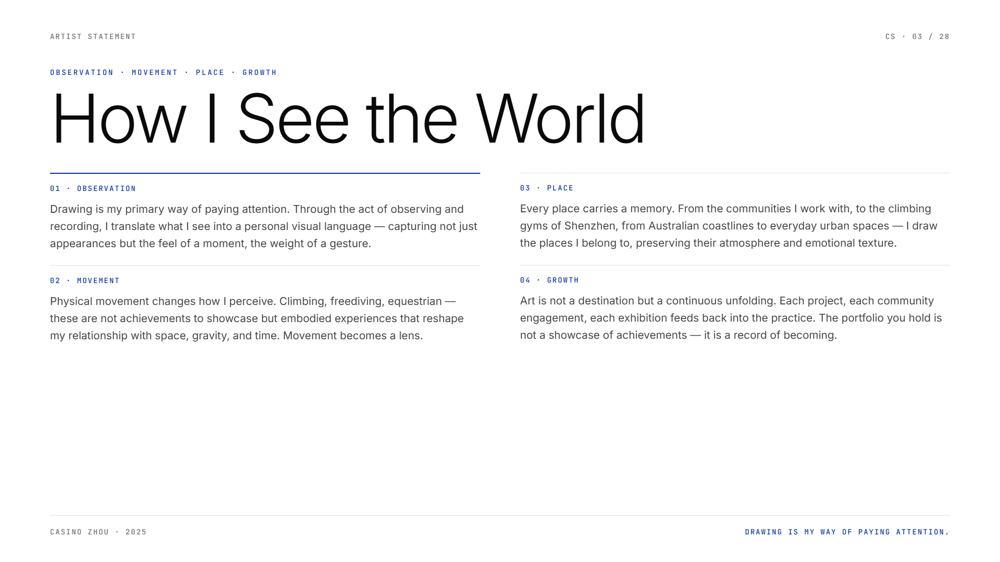
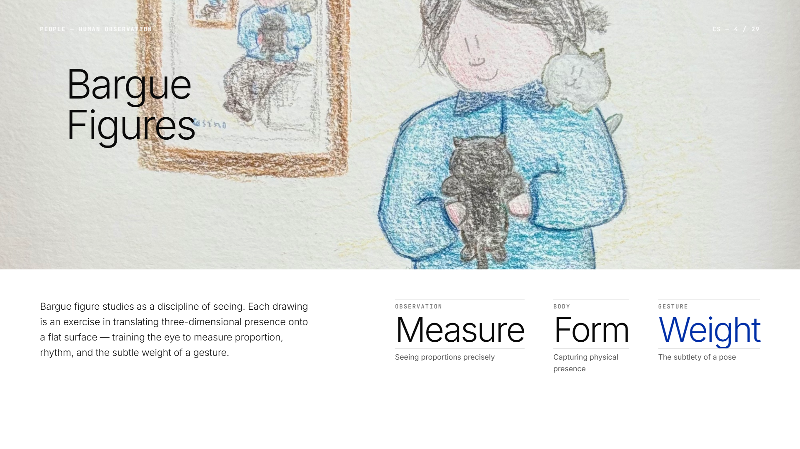
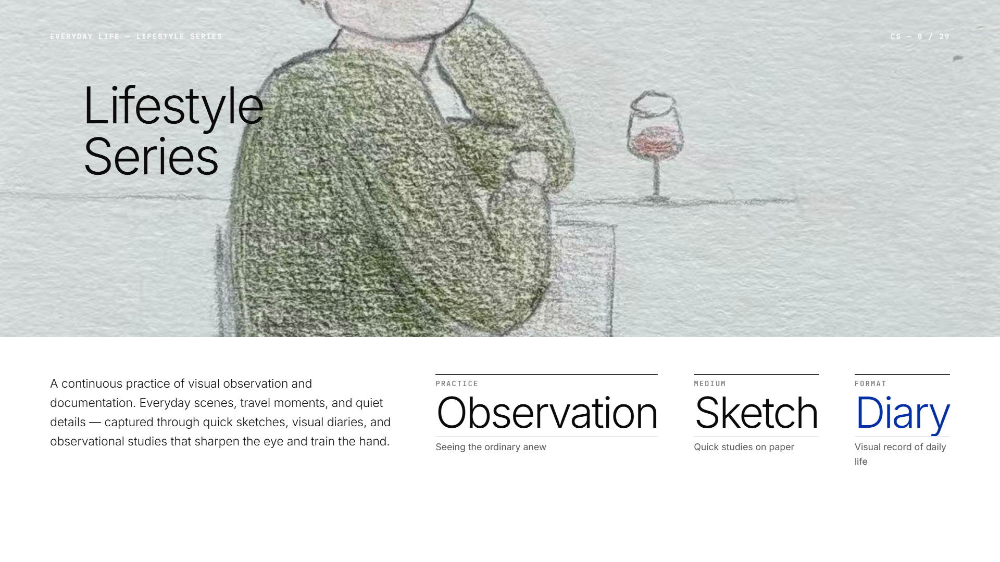
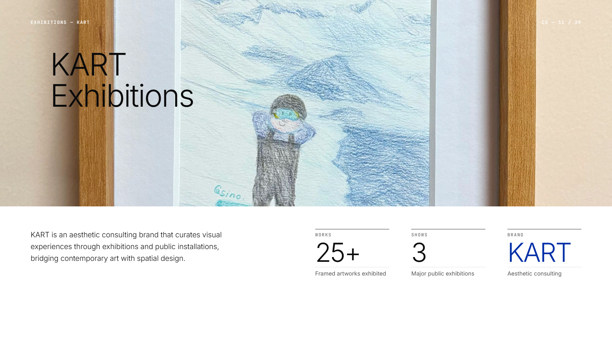
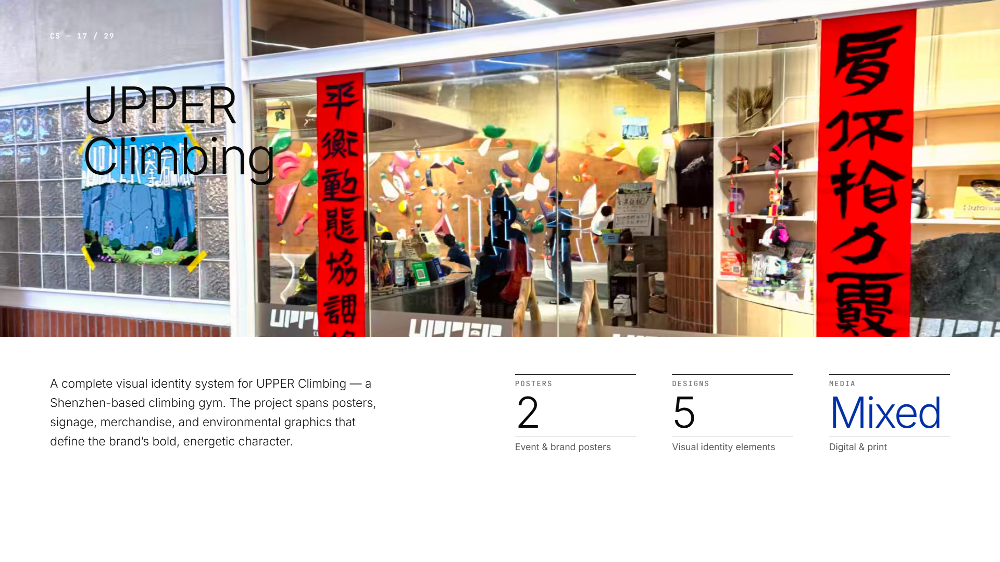

观看
她开始把身体经验视为观看训练：攀岩中的路线判断、自由潜中的呼吸感、旅行中的空间差异，都可以进入绘画与视觉创作。
Casino 把绘画作为一种专注方式，用身体经验、跨文化生活与公共项目持续训练自己的观看。
在移动的生活中建立观看：从深圳到澳大利亚，从身体训练到视觉叙事。
她开始把身体经验视为观看训练：攀岩中的路线判断、自由潜中的呼吸感、旅行中的空间差异，都可以进入绘画与视觉创作。
学习、寄宿学校、跨文化旅行与运动训练共同构成她的生活节奏。
她的项目进入幼儿园纪念册、攀岩馆视觉系统、KART 空间展览、香港与国际艺术交流。
作品不是单张图像，而是她如何把生活经验转化为公共记忆的证据。
把幼儿园记忆转化为可被保存的视觉档案，让一个社区的共同时间有了可回看的形状。
Bargue 训练在这里不是技巧炫示，而是对观看秩序的练习。
旅行、运动与日常经验进入画面，使作品记录一个年轻实践者如何在移动中保持注意力。
作品进入 KART 空间与衍生品开发，开始与真实观众、真实场景、真实使用关系发生连接。
把攀岩经验转化为视觉文化，保留运动场景中的方向感、节奏与身体判断。

用完整 portfolio 页面替换原有单张项目照片，让 Casino 的作品线索以同一套视觉系统呈现。

把观看、运动、跨文化经验与艺术实践放在同一张方法地图里。

用 portfolio 页面呈现人物训练中的比例、形体与姿态判断。

日常观察、速写与视觉日记被整理为连续的作品页面。

以作品进入展览空间的页面，替代原来的单张展览照片。

把攀岩馆视觉系统作为完整 portfolio 项目页面展示。
从青少年绘画训练进入跨文化艺术实践，建立稳定的个人观看语言。
整理已有项目，形成清晰的作品线索与档案结构。
梳理场所感、运动中的生活、艺术与公共文化三条主线，并为每条主线保留代表作品、项目说明与个人观察。
AOEM 记录的不是分数，而是她如何观看、理解、表达，并从经验中建立意义。
她不是只观察画面，而是在观察人如何处在空间里。
分类能力已经出现，下一步是让每个方向形成更强的作品证据。
表达正在从个人练习走向公共使用，这是非常重要的成长。
Casino 的作品应当被看作一种年轻生命正在建立世界关系的证据。
阅读不只是艺术史知识，而是帮助她理解生活经验如何成为作品来源。
支持她继续发展场所观察与社区记忆。
理解艺术如何进入展览、品牌空间、运动场馆与公共生活。
把项目经验转化为更完整的叙事结构。
不要急于把所有经历都放进同一个叙事里。先建立三条主线。
Casino 的个人档案呈现出清晰的长期线索：她以绘画保存注意力，也将跨文化生活、身体训练、旅行与公共项目持续转化为创作材料。